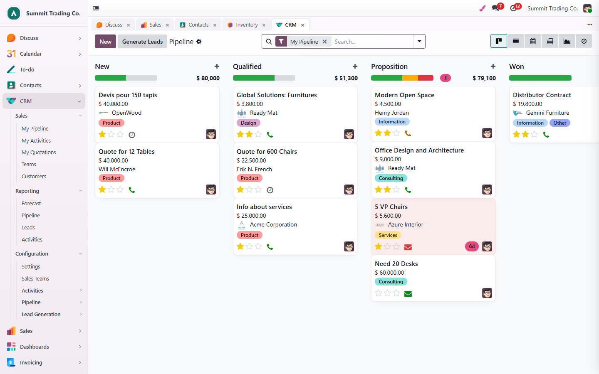
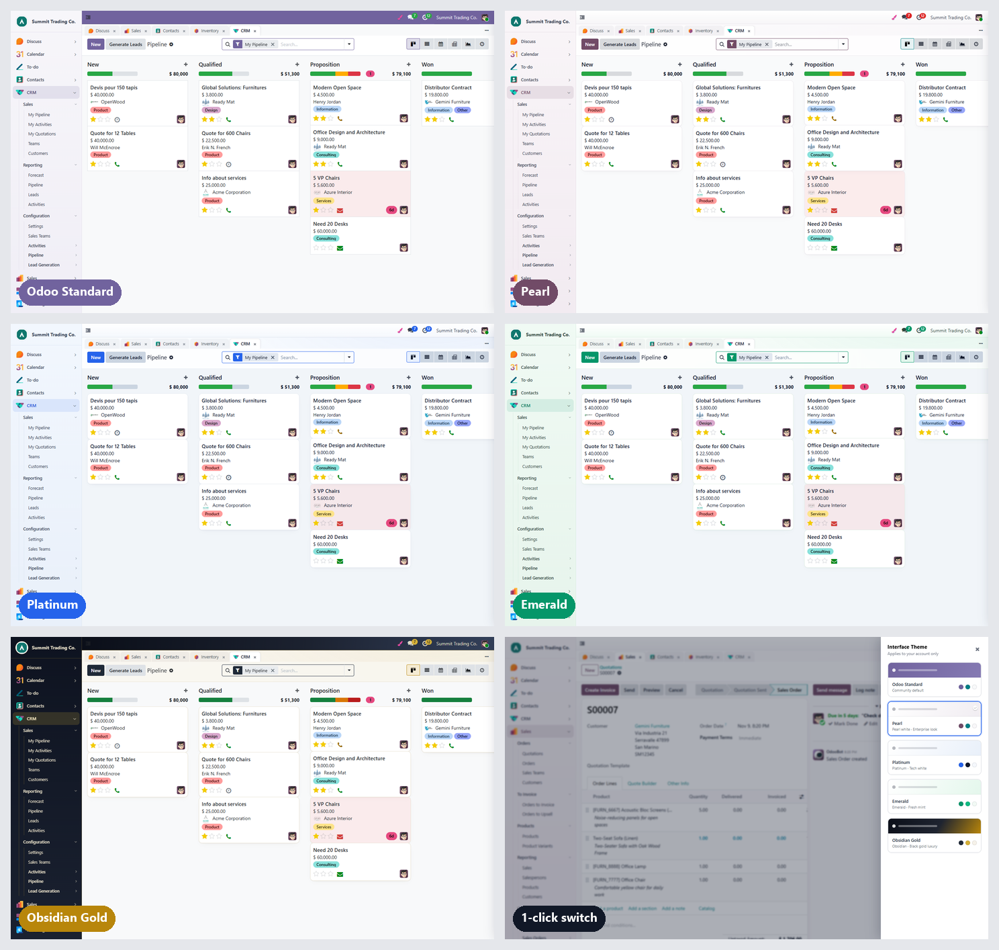
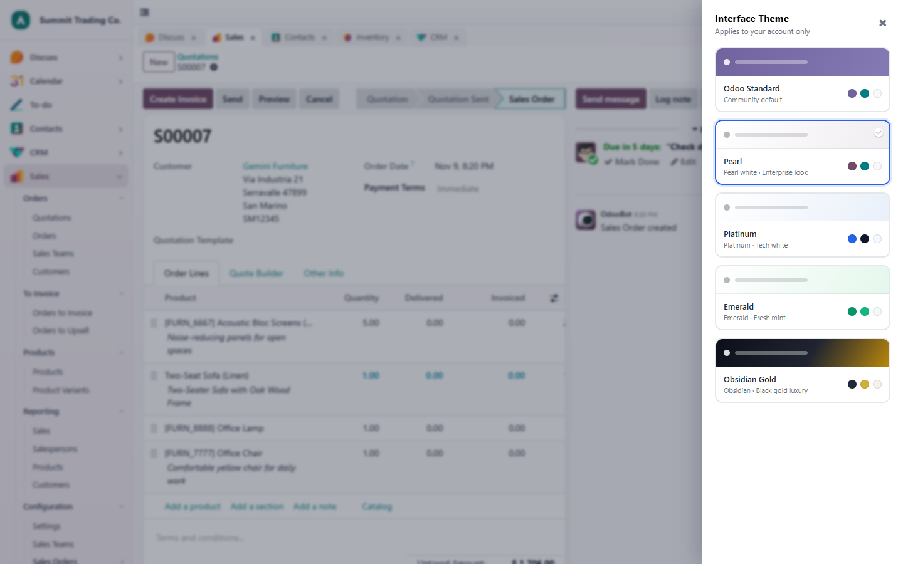
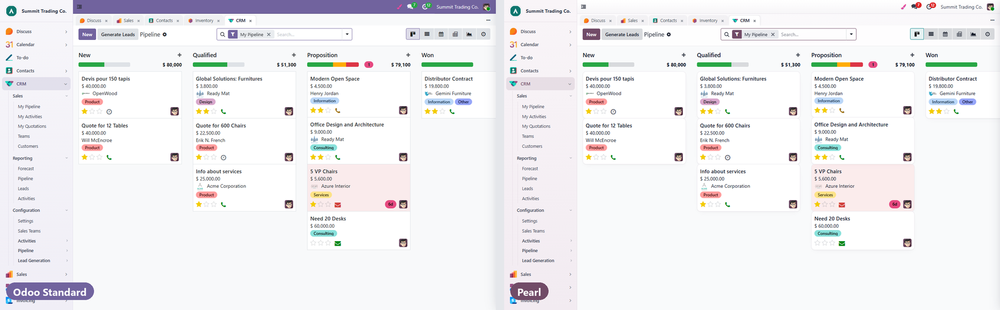
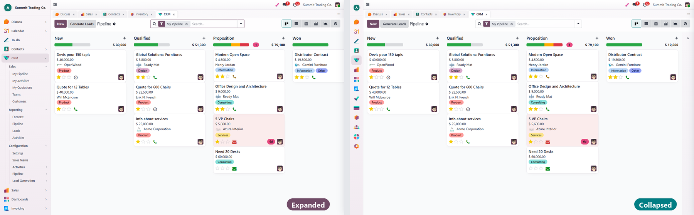
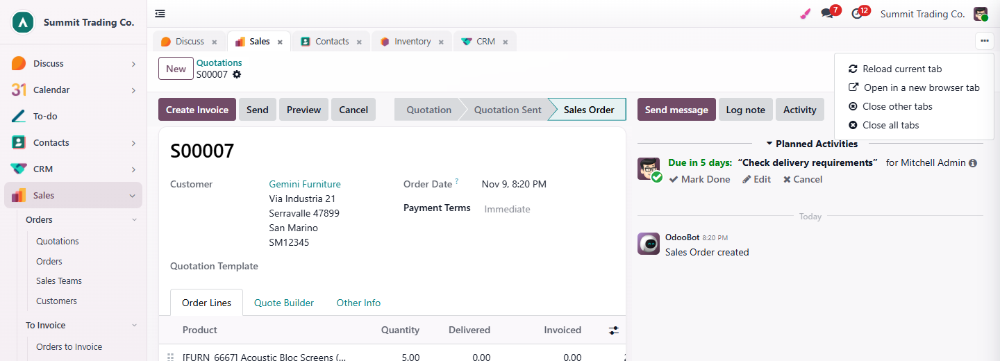
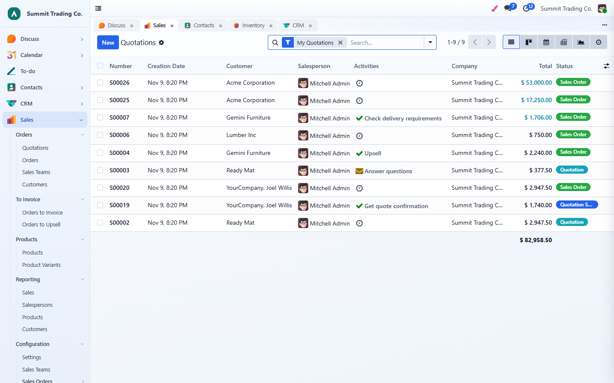
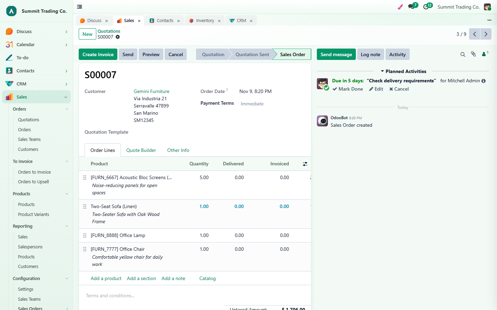
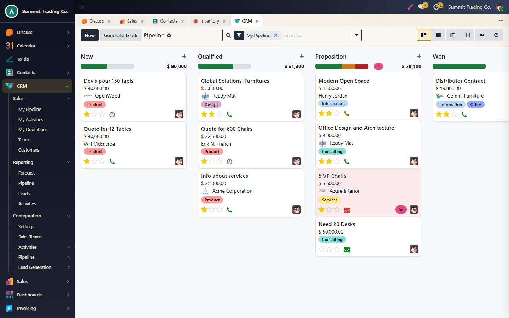
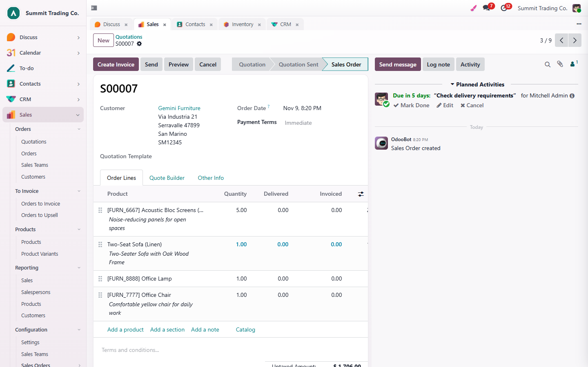

<section style="font-family:'Inter','Segoe UI',Roboto,Helvetica,Arial,sans-serif;color:#1F2937;background:#FFFFFF;">
<div class="container" style="max-width:1140px;margin:0 auto;padding:0 16px;">

    <!-- ============ BADGES ============ -->
    <div style="display:flex;justify-content:space-between;flex-wrap:wrap;align-items:center;border-bottom:1px solid #E5E7EB;padding:14px 0;">
        <div style="display:flex;flex-wrap:wrap;">
            <span style="background:#017E84;color:#fff;font-size:13px;font-weight:600;padding:5px 18px;margin:3px;border-radius:50px;">Community</span>
            <span style="background:#374151;color:#fff;font-size:13px;font-weight:600;padding:5px 18px;margin:3px;border-radius:50px;">Odoo.sh / On-Premise</span>
        </div>
        <div style="display:flex;flex-wrap:wrap;">
            <span style="background:#875A7B;color:#fff;font-size:13px;font-weight:600;padding:5px 18px;margin:3px;border-radius:50px;">Odoo 19</span>
        </div>
    </div>

    <!-- ============ HERO ============ -->
    <div style="text-align:center;padding:64px 0 32px;">
        <div style="display:inline-block;background:#F3EEF6;color:#714B67;font-weight:700;font-size:13px;letter-spacing:1px;padding:6px 16px;border-radius:50px;margin-bottom:18px;">PREMIUM BACKEND THEME FOR ODOO 19 COMMUNITY</div>
        <h1 style="font-size:46px;font-weight:800;line-height:1.15;color:#111827;margin:0 0 18px;">Beautiful Backend Theme</h1>
        <h2 style="font-size:24px;font-weight:600;line-height:1.45;color:#374151;margin:0 auto 18px;max-width:880px;">
            Give your team a backend they <span style="color:#714B67;">love to work in</span>:
            4 premium themes, a full-height <span style="color:#017E84;">app sidebar</span> and a
            <span style="color:#2563EB;">multi-tab workspace</span> &mdash; switched in one click, remembered per user.
        </h2>
        <p style="font-size:17px;line-height:1.7;color:#6B7280;max-width:820px;margin:0 auto 30px;">
            Built the same way as Odoo&rsquo;s own dark mode: every theme is a pre-compiled CSS bundle, so switching is instant
            and there is no extra JavaScript to slow your pages down. Includes the <b>Pearl</b> theme that gives Odoo Community
            the familiar Enterprise look.
        </p>

        <div style="display:flex;flex-wrap:wrap;justify-content:center;margin-bottom:36px;">
            <div style="background:#F9FAFB;border:1px solid #E5E7EB;border-radius:14px;padding:16px 22px;margin:6px;min-width:190px;">
                <div style="font-size:28px;font-weight:800;color:#714B67;">4 + 1</div>
                <div style="font-size:14px;color:#6B7280;">premium themes + Odoo standard</div>
            </div>
            <div style="background:#F9FAFB;border:1px solid #E5E7EB;border-radius:14px;padding:16px 22px;margin:6px;min-width:190px;">
                <div style="font-size:28px;font-weight:800;color:#017E84;">1 click</div>
                <div style="font-size:14px;color:#6B7280;">to switch from the top bar</div>
            </div>
            <div style="background:#F9FAFB;border:1px solid #E5E7EB;border-radius:14px;padding:16px 22px;margin:6px;min-width:190px;">
                <div style="font-size:28px;font-weight:800;color:#2563EB;">Per user</div>
                <div style="font-size:14px;color:#6B7280;">everyone picks their own look</div>
            </div>
            <div style="background:#F9FAFB;border:1px solid #E5E7EB;border-radius:14px;padding:16px 22px;margin:6px;min-width:190px;">
                <div style="font-size:28px;font-weight:800;color:#B8860B;">0</div>
                <div style="font-size:14px;color:#6B7280;">configuration needed</div>
            </div>
        </div>

        
        <p style="font-size:14px;color:#9CA3AF;margin-top:12px;">Pearl theme on the CRM pipeline &mdash; app sidebar on the left, open apps as tabs on top.</p>
    </div>

    <!-- ============ FEATURE GRID ============ -->
    <div style="padding:30px 0 40px;">
        <h2 style="text-align:center;font-size:32px;font-weight:800;color:#111827;margin:0 0 32px;">More than a color change</h2>
        <div style="display:flex;flex-wrap:wrap;margin:0 -8px;">
            <div style="flex:1 1 250px;margin:8px;border:1px solid #E5E7EB;border-radius:14px;padding:20px;">
                <div style="font-size:26px;">&#127912;</div><div style="font-weight:700;font-size:17px;margin:6px 0;">4 Premium Themes</div>
                <div style="font-size:14px;color:#6B7280;line-height:1.6;">Pearl, Platinum, Emerald and Obsidian Gold &ndash; each with its own top bar, colors, backgrounds and card style.</div></div>
            <div style="flex:1 1 250px;margin:8px;border:1px solid #E5E7EB;border-radius:14px;padding:20px;">
                <div style="font-size:26px;">&#128396;</div><div style="font-weight:700;font-size:17px;margin:6px 0;">One-Click Switcher</div>
                <div style="font-size:14px;color:#6B7280;line-height:1.6;">A paint-brush button in the top bar opens a drawer with live theme previews. Click a card &ndash; done.</div></div>
            <div style="flex:1 1 250px;margin:8px;border:1px solid #E5E7EB;border-radius:14px;padding:20px;">
                <div style="font-size:26px;">&#128100;</div><div style="font-weight:700;font-size:17px;margin:6px 0;">Saved Per User</div>
                <div style="font-size:14px;color:#6B7280;line-height:1.6;">Each user&rsquo;s choice is stored on their account, so it follows them to every device and browser.</div></div>
            <div style="flex:1 1 250px;margin:8px;border:1px solid #E5E7EB;border-radius:14px;padding:20px;">
                <div style="font-size:26px;">&#128450;</div><div style="font-weight:700;font-size:17px;margin:6px 0;">App Sidebar</div>
                <div style="font-size:14px;color:#6B7280;line-height:1.6;">All apps and their menus in one column. Expand any app&rsquo;s menu tree without leaving the current screen.</div></div>
            <div style="flex:1 1 250px;margin:8px;border:1px solid #E5E7EB;border-radius:14px;padding:20px;">
                <div style="font-size:26px;">&#8676;</div><div style="font-weight:700;font-size:17px;margin:6px 0;">Collapsible Icon Rail</div>
                <div style="font-size:14px;color:#6B7280;line-height:1.6;">Collapse the sidebar to a slim icon rail for more working space. Your choice is remembered.</div></div>
            <div style="flex:1 1 250px;margin:8px;border:1px solid #E5E7EB;border-radius:14px;padding:20px;">
                <div style="font-size:26px;">&#128209;</div><div style="font-weight:700;font-size:17px;margin:6px 0;">Multi-Tab Workspace</div>
                <div style="font-size:14px;color:#6B7280;line-height:1.6;">Every menu you open becomes a tab with its own breadcrumbs. Jump between Sales, CRM and Inventory instantly.</div></div>
            <div style="flex:1 1 250px;margin:8px;border:1px solid #E5E7EB;border-radius:14px;padding:20px;">
                <div style="font-size:26px;">&#9889;</div><div style="font-weight:700;font-size:17px;margin:6px 0;">Keep-Alive Tabs</div>
                <div style="font-size:14px;color:#6B7280;line-height:1.6;">Inactive tabs stay alive in the background: unsaved edits and scroll position are still there when you come back.</div></div>
            <div style="flex:1 1 250px;margin:8px;border:1px solid #E5E7EB;border-radius:14px;padding:20px;">
                <div style="font-size:26px;">&#10024;</div><div style="font-weight:700;font-size:17px;margin:6px 0;">Polished Details</div>
                <div style="font-size:14px;color:#6B7280;line-height:1.6;">Rounded form cards with soft shadows, tinted list headers, row hover, refined kanban cards, dialogs and slim scrollbars.</div></div>
            <div style="flex:1 1 250px;margin:8px;border:1px solid #E5E7EB;border-radius:14px;padding:20px;">
                <div style="font-size:26px;">&#128241;</div><div style="font-weight:700;font-size:17px;margin:6px 0;">Mobile Friendly</div>
                <div style="font-size:14px;color:#6B7280;line-height:1.6;">On phones the sidebar steps aside and Odoo&rsquo;s standard mobile menu is used, so nothing breaks on small screens.</div></div>
        </div>
    </div>

    <!-- ============ THEMES ============ -->
    <div style="padding:36px 0;border-top:1px solid #F3F4F6;">
        <div style="font-size:13px;font-weight:700;color:#714B67;letter-spacing:1px;text-align:center;">THE THEMES</div>
        <h2 style="text-align:center;font-size:32px;font-weight:800;color:#111827;margin:6px 0 10px;">Five looks, one click apart</h2>
        <p style="text-align:center;font-size:17px;color:#6B7280;max-width:760px;margin:0 auto 24px;">The same CRM pipeline in every theme. Users can switch at any time and go back to the Odoo standard look whenever they want.</p>
        

        <div style="display:flex;flex-wrap:wrap;margin:24px -8px 0;">
            <div style="flex:1 1 250px;margin:8px;border-radius:14px;padding:20px;background:linear-gradient(135deg,#FFFFFF 0%,#F1EDF2 100%);border:1px solid #E9E2EC;">
                <div style="font-weight:800;font-size:19px;color:#714B67;">Pearl</div>
                <div style="font-size:13px;color:#6B7280;margin:2px 0 10px;">White gradient &middot; Enterprise look</div>
                <div style="font-size:14px;color:#4B5563;line-height:1.6;">Odoo Enterprise&rsquo;s purple <code>#714B67</code> and teal <code>#017E84</code> on a clean white top bar &ndash; the Enterprise feel on Community.</div>
                <div style="margin-top:12px;"><span style="display:inline-block;width:18px;height:18px;border-radius:50%;background:#714B67;margin-right:4px;"></span><span style="display:inline-block;width:18px;height:18px;border-radius:50%;background:#017E84;margin-right:4px;"></span><span style="display:inline-block;width:18px;height:18px;border-radius:50%;background:#F8F7F9;border:1px solid #ddd;"></span></div></div>
            <div style="flex:1 1 250px;margin:8px;border-radius:14px;padding:20px;background:linear-gradient(135deg,#FFFFFF 0%,#E9F0FA 100%);border:1px solid #DCE6F5;">
                <div style="font-weight:800;font-size:19px;color:#2563EB;">Platinum</div>
                <div style="font-size:13px;color:#6B7280;margin:2px 0 10px;">Frost silver &middot; Tech white</div>
                <div style="font-size:14px;color:#4B5563;line-height:1.6;">Frost-silver top bar, cool slate grays and electric blue accents for a crisp, modern SaaS look.</div>
                <div style="margin-top:12px;"><span style="display:inline-block;width:18px;height:18px;border-radius:50%;background:#2563EB;margin-right:4px;"></span><span style="display:inline-block;width:18px;height:18px;border-radius:50%;background:#0F172A;margin-right:4px;"></span><span style="display:inline-block;width:18px;height:18px;border-radius:50%;background:#F5F8FC;border:1px solid #ddd;"></span></div></div>
            <div style="flex:1 1 250px;margin:8px;border-radius:14px;padding:20px;background:linear-gradient(135deg,#FFFFFF 0%,#E4F7EC 100%);border:1px solid #CFEEDC;">
                <div style="font-weight:800;font-size:19px;color:#059669;">Emerald</div>
                <div style="font-size:13px;color:#6B7280;margin:2px 0 10px;">Fresh mint &middot; Calm green</div>
                <div style="font-size:14px;color:#4B5563;line-height:1.6;">A light, fresh green palette that is easy on the eyes during long working days.</div>
                <div style="margin-top:12px;"><span style="display:inline-block;width:18px;height:18px;border-radius:50%;background:#059669;margin-right:4px;"></span><span style="display:inline-block;width:18px;height:18px;border-radius:50%;background:#10B981;margin-right:4px;"></span><span style="display:inline-block;width:18px;height:18px;border-radius:50%;background:#F2FAF5;border:1px solid #ddd;"></span></div></div>
            <div style="flex:1 1 250px;margin:8px;border-radius:14px;padding:20px;background:linear-gradient(135deg,#1F2430 0%,#0B0F19 70%,#3A2E10 100%);border:1px solid #1F2937;">
                <div style="font-weight:800;font-size:19px;color:#D4AF37;">Obsidian Gold</div>
                <div style="font-size:13px;color:#9CA3AF;margin:2px 0 10px;">Graphite &middot; Black-gold luxury</div>
                <div style="font-size:14px;color:#D1D5DB;line-height:1.6;">A graphite top bar and sidebar with gold highlights &ndash; bold and premium.</div>
                <div style="margin-top:12px;"><span style="display:inline-block;width:18px;height:18px;border-radius:50%;background:#1F2937;border:1px solid #555;margin-right:4px;"></span><span style="display:inline-block;width:18px;height:18px;border-radius:50%;background:#D4AF37;margin-right:4px;"></span><span style="display:inline-block;width:18px;height:18px;border-radius:50%;background:#F6F2E9;"></span></div></div>
        </div>
    </div>

    <!-- ============ SWITCHER ============ -->
    <div style="padding:36px 0;border-top:1px solid #F3F4F6;">
        <div style="font-size:13px;font-weight:700;color:#017E84;letter-spacing:1px;">01 &middot; THEME SWITCHER</div>
        <h3 style="font-size:26px;font-weight:800;color:#111827;margin:6px 0 10px;">Pick a theme from the top bar</h3>
        <p style="font-size:16px;line-height:1.7;color:#4B5563;margin:0 0 18px;">Click the paint-brush icon in the top bar and a drawer slides in with a preview card for every theme. One click applies it to your account only &ndash; your colleagues keep their own choice.</p>
        
    </div>

    <!-- ============ ENTERPRISE LOOK ============ -->
    <div style="padding:36px 0;border-top:1px solid #F3F4F6;">
        <div style="font-size:13px;font-weight:700;color:#017E84;letter-spacing:1px;">02 &middot; ENTERPRISE LOOK ON COMMUNITY</div>
        <h3 style="font-size:26px;font-weight:800;color:#111827;margin:6px 0 10px;">From the standard Community purple to a refined white workspace</h3>
        <p style="font-size:16px;line-height:1.7;color:#4B5563;margin:0 0 18px;">Left: Odoo standard colors. Right: the Pearl theme &ndash; white gradient top bar, Enterprise brand colors and soft page background.</p>
        
    </div>

    <!-- ============ SIDEBAR ============ -->
    <div style="padding:36px 0;border-top:1px solid #F3F4F6;">
        <div style="font-size:13px;font-weight:700;color:#017E84;letter-spacing:1px;">03 &middot; APP SIDEBAR</div>
        <h3 style="font-size:26px;font-weight:800;color:#111827;margin:6px 0 10px;">Every app and menu, always one click away</h3>
        <p style="font-size:16px;line-height:1.7;color:#4B5563;margin:0 0 6px;">The sidebar replaces the app grid and the horizontal menu bar. All apps are listed with their icons; the current app opens its menu tree automatically, and you can expand any other app to browse its menus without switching first.</p>
        <p style="font-size:16px;line-height:1.7;color:#4B5563;margin:0 0 18px;">Need more room? Collapse it to a slim icon rail with the button at the top left &ndash; it stays collapsed the next time you log in on that browser.</p>
        
    </div>

    <!-- ============ TABS ============ -->
    <div style="padding:36px 0;border-top:1px solid #F3F4F6;">
        <div style="font-size:13px;font-weight:700;color:#017E84;letter-spacing:1px;">04 &middot; MULTI-TAB WORKSPACE</div>
        <h3 style="font-size:26px;font-weight:800;color:#111827;margin:6px 0 10px;">Work in several apps at once &ndash; like a browser</h3>
        <p style="font-size:16px;line-height:1.7;color:#4B5563;margin:0 0 18px;">Each menu you open becomes a tab with its own breadcrumbs. Tabs are kept alive, so a half-filled form is still waiting for you after you check something in another app.</p>
        
        <div style="display:flex;flex-wrap:wrap;margin:18px -8px 0;">
            <div style="flex:1 1 250px;margin:8px;background:#F9FAFB;border-radius:12px;padding:16px;font-size:14px;line-height:1.6;color:#4B5563;"><b style="color:#111827;">Independent tabs</b><br/>each tab has its own action history and breadcrumbs.</div>
            <div style="flex:1 1 250px;margin:8px;background:#F9FAFB;border-radius:12px;padding:16px;font-size:14px;line-height:1.6;color:#4B5563;"><b style="color:#111827;">Nothing gets lost</b><br/>unsaved edits and scroll position survive switching tabs.</div>
            <div style="flex:1 1 250px;margin:8px;background:#F9FAFB;border-radius:12px;padding:16px;font-size:14px;line-height:1.6;color:#4B5563;"><b style="color:#111827;">Drag to reorder</b><br/>arrange tabs the way you work; the list is restored after a page refresh.</div>
            <div style="flex:1 1 250px;margin:8px;background:#F9FAFB;border-radius:12px;padding:16px;font-size:14px;line-height:1.6;color:#4B5563;"><b style="color:#111827;">Tab actions</b><br/>reload the current tab, open it in a new browser tab, close others or close all.</div>
        </div>
    </div>

    <!-- ============ VIEWS ============ -->
    <div style="padding:36px 0;border-top:1px solid #F3F4F6;">
        <div style="font-size:13px;font-weight:700;color:#017E84;letter-spacing:1px;">05 &middot; EVERY VIEW, RESTYLED</div>
        <h3 style="font-size:26px;font-weight:800;color:#111827;margin:6px 0 18px;">Lists, forms and kanban &ndash; consistent in every theme</h3>
        <div style="display:flex;flex-wrap:wrap;margin:0 -7px;">
            <div style="flex:1 1 460px;margin:7px;"><p style="font-size:13px;color:#9CA3AF;margin-top:6px;">Platinum &middot; list view</p></div>
            <div style="flex:1 1 460px;margin:7px;"><p style="font-size:13px;color:#9CA3AF;margin-top:6px;">Emerald &middot; form view</p></div>
            <div style="flex:1 1 460px;margin:7px;"><p style="font-size:13px;color:#9CA3AF;margin-top:6px;">Obsidian Gold &middot; kanban view</p></div>
            <div style="flex:1 1 460px;margin:7px;"><p style="font-size:13px;color:#9CA3AF;margin-top:6px;">Pearl &middot; form view</p></div>
        </div>
    </div>

    <!-- ============ TECH ============ -->
    <div style="padding:30px 0 30px;">
        <div style="background:#F9FAFB;border-radius:16px;padding:28px;">
            <h3 style="font-size:22px;font-weight:800;color:#111827;margin:0 0 14px;">Light, clean and built the Odoo way</h3>
            <div style="display:flex;flex-wrap:wrap;font-size:15px;line-height:1.9;color:#374151;">
                <div style="flex:1 1 400px;padding-right:16px;">
                    &#9679; Same mechanism as Odoo&rsquo;s official dark mode: one pre-compiled CSS bundle per theme<br/>
                    &#9679; JavaScript is loaded once; switching only swaps the stylesheet<br/>
                    &#9679; Theme stored in the user&rsquo;s settings (<code>res.users.settings</code>)
                </div>
                <div style="flex:1 1 400px;">
                    &#9679; Pure OWL components, no jQuery<br/>
                    &#9679; Depends only on the standard <code>web</code> module<br/>
                    &#9679; English &amp; Simplified Chinese included
                </div>
            </div>
        </div>
    </div>

    <!-- ============ COMPATIBILITY ============ -->
    <div style="padding:0 0 30px;">
        <div style="background:#FFFBEB;border:1px solid #FDE68A;border-radius:14px;padding:20px 24px;font-size:15px;line-height:1.7;color:#78350F;">
            <b>Compatibility:</b> designed for <b>Odoo 19 Community Edition</b>. It is <b>not compatible with Odoo Enterprise</b>
            (the Enterprise web client and home menu use a different navigation model). Please do not install it on an Enterprise database.
        </div>
    </div>

    <!-- ============ FAQ ============ -->
    <div style="padding:10px 0 40px;">
        <h2 style="text-align:center;font-size:32px;font-weight:800;color:#111827;margin:0 0 26px;">FAQ</h2>
        <div style="border:1px solid #E5E7EB;border-radius:12px;padding:18px 20px;margin-bottom:12px;">
            <div style="font-weight:700;font-size:16px;color:#111827;">Does changing my theme affect other users?</div>
            <div style="font-size:15px;color:#4B5563;line-height:1.7;margin-top:6px;">No. The theme is saved on your own account. Every user chooses their own look, and new users start with the Odoo standard look.</div></div>
        <div style="border:1px solid #E5E7EB;border-radius:12px;padding:18px 20px;margin-bottom:12px;">
            <div style="font-weight:700;font-size:16px;color:#111827;">Will it slow Odoo down?</div>
            <div style="font-size:15px;color:#4B5563;line-height:1.7;margin-top:6px;">Each theme is compiled once into its own CSS bundle, exactly like Odoo&rsquo;s dark mode. Pages load a single stylesheet as usual; switching themes simply reloads the page with another bundle.</div></div>
        <div style="border:1px solid #E5E7EB;border-radius:12px;padding:18px 20px;margin-bottom:12px;">
            <div style="font-weight:700;font-size:16px;color:#111827;">Can I go back to the standard Odoo look?</div>
            <div style="font-size:15px;color:#4B5563;line-height:1.7;margin-top:6px;">Yes &ndash; choose &ldquo;Odoo Standard&rdquo; in the theme drawer at any time.</div></div>
        <div style="border:1px solid #E5E7EB;border-radius:12px;padding:18px 20px;margin-bottom:12px;">
            <div style="font-weight:700;font-size:16px;color:#111827;">What about phones and tablets?</div>
            <div style="font-size:15px;color:#4B5563;line-height:1.7;margin-top:6px;">On small screens the sidebar is hidden and Odoo&rsquo;s own mobile menu is used, so the mobile experience stays familiar.</div></div>
        <div style="border:1px solid #E5E7EB;border-radius:12px;padding:18px 20px;margin-bottom:12px;">
            <div style="font-weight:700;font-size:16px;color:#111827;">Does it work with Odoo Enterprise?</div>
            <div style="font-size:15px;color:#4B5563;line-height:1.7;margin-top:6px;">No, this module is for Odoo 19 Community Edition only.</div></div>
    </div>

    <!-- ============ CONTACT ============ -->
    <div style="text-align:center;padding:40px 20px;margin-bottom:40px;background:linear-gradient(135deg,#1B1830 0%,#714B67 100%);border-radius:18px;color:#fff;">
        <h2 style="font-size:28px;font-weight:800;margin:0 0 10px;color:#fff;">Questions or a custom theme in your brand colors?</h2>
        <p style="font-size:17px;margin:0 0 14px;color:#EDE7F0;">We are happy to help with installation and customization.</p>
        <p style="font-size:18px;font-weight:700;margin:0;"><a href="https://www.astacrm.com" style="color:#fff;text-decoration:underline;">www.astacrm.com</a></p>
    </div>

</div>
</section>
